Movie Releases By Score
2801.
Beauty Is Embarrassing
Release Date:
September 7, 2012
Beauty Is Embarrassing chronicles the vaulted highs and the crushing lows of a commercial artist struggling to find peace and balance between his work and his art. Acting as his own narrator, Wayne guides us through his life using moments from his latest creation: a hilarious, biographical one-man show. The pieces are drawn from performances at venues in Tennessee, New York and Los Angeles including the famous Roseland Ballroom and the Largo Theater. (Future You Pictures)
|
|

|
2802.
Cosmos
Release Date:
June 17, 2016
Witold who has just failed the bar, and his companion Fuchs, who has recently quit his fashion job, are staying at a guesthouse run by the intermittently paralytic Madame Woytis. Upon discovering a sparrow hanged in the woods near the house, Witold's reality mutates into a whirlwind of tension, histrionics, foreboding omens, and surrealistic logic as he becomes obsessed with Madame Woytis's daughter Lena, newly married to Lucien.
|

|
2803.
First Position
Release Date:
May 4, 2012
Every year, thousands of aspiring dancers enter one of the world's most prestigious ballet competitions, the Youth America Grand Prix, where lifelong dreams are at stake. In the final round, with hundreds competing for only a handful of elite scholarships and contracts, practice and discipline are paramount, and nothing short of perfection is expected. Bess Kargman's award-winning documentary, FIRST POSITION, follows six young dancers as they prepare for a chance to enter the world of professional ballet, struggling through bloodied feet, near exhaustion and debilitating injuries, all while navigating the drama of adolescence. A showcase of awe-inspiring talent, tenacity and passion, FIRST POSITION paints a thrilling and moving portrait of the most gifted young ballet stars of tomorrow. (Sundance Selects)
|
2804.
The Final Master
Release Date:
June 3, 2016
The Final Master follows a Wing Chun practitioner’s ambitious journey to open a martial arts school in the Northern Center to fulfill his master’s death wish of passing down the art. In order to gain the rights to achieve this, he has to send his apprentice to secretly challenge & defeat eight martial arts schools. What he doesn’t realize is that he is merely a pawn being played in the power game within the martial arts community.
|
|
2805.
Pusher
Release Date:
May 7, 1999
Frank, a small-time drug dealer, is about to experience the worst week of his life. After a complicated heroin deal goes wrong and he loses both the money and the merchandise, Frank finds himself massively in debt to the Balkan drug baron Milo. The squeeze is on and as the week passes the pressure mounts, with Frank trying to repay the money in the face of Milo’s increasing frustration and his own latent self-destructiveness. Come Friday, Saturday might never happen. As Frank launches one last desperate push to raise the missing funds, it appears less and less likely he will manage to emerge from this hellish week unscathed… [Magnolia Pictures]
|
|
2806.
Gimme Danger
Release Date:
October 28, 2016
Emerging from Ann Arbor Michigan amidst a countercultural revolution, The Stooges’ powerful and aggressive style of rock-n-roll blew a crater in the musical landscape of the late 1960s. Assaulting audiences with a blend of rock, blues, R&B, and free jazz, the band planted the seeds for what would be called punk and alternative rock in the decades that followed. Jim Jarmusch’s Gimme Danger chronicles the story of The Stooges, one of the greatest rock-n-roll bands of all time, presenting the context of the Stooges emergence musically, culturally, politically, historically, and relating their adventures and misadventures while charting their inspirations and the reasons behind their initial commercial challenges, as well as their long-lasting legacy.
|
|
| 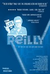 |
2807.
The Life of Reilly
Release Date:
November 9, 2007
If, in 1940, you had a lobotomized aunt, an institutionalized father, and a racist mother, and were the only gay kid on the block, what do you think the odds would be that you'd end up a Tony winner, a staple of television, and a generational icon? Enter The Life of Reilly. The cliché goes that truth is stranger than fiction. In this case, it is also funnier and more heartbreaking. Charles Nelson Reilly, famous for his game show innuendos and X-Files guest appearances, takes us through his bizarre, star-studded, tragic, hilarious, and ultimately amazing life with a potent blend of tenderness and quick one-liners. The Life of Reilly is an adaptation of Mr. Reilly's acclaimed one-man show and was photographed for the screen during Mr. Reilly's final two performances of his play in North Hollywood, California. (Vagrant Films)
|
2808.
I Served the King of England
Release Date:
August 29, 2008

Jan Dít? is short in height, but high in ambition. To put it bluntly, the young provincial waiter wants to become a millionaire. And he knows just how to do it: by hearing everything, seeing everything, and creating opportunities at every turn. Armed with this knowledge and an irrepressible wish to please, he soon leaves his first place of employment, a pub, for a luxury brothel and, finally moving onto an elegant Art Nouveau Prague restaurant. But by the late 1930s, things are changing: Hitler has taken the Sudetenland region and is breaking apart Czechoslovakia. Jan falls in love with Líza, a Sudeten German proud of her Aryan blood. They marry, and soon after Líza is sent to serve on the Polish front, while Jan remains behind to serve as a nurse in
a Nazi SS Research Hospital, but when she returns, she has a fortune in rare stamps that Jews had ‘left behind’ ... After Líza’s less than heroic death, Jan sells
the stamps and becomes ... a millionaire. But he only has three years to enjoy his fortune: the new Communist regime puts him behind bars for 15 years, one for each of his millions... Upon his release from jail, Jan is sent to live in a decrepit border town. Here Jan reflects on the events that have shaped his life – and to reflect on what might have happened if he had played a different role in these events. (Sony Classics)
|
|

|
2809.
Gangs of New York
Release Date:
December 20, 2002
Set in New York City between 1840 and 1863, this is the story of a young man named Amsterdam (DiCaprio) who seeks vengeance against Bill "The Butcher" Poole (Day-Lewis), the man who killed his father as a result of warfare between the powerful Manhattan gangs.
|

|
2810.
Barry
Release Date:
December 16, 2016
A young Barack Obama, known to his friends as Barry, arrives in New York City in the fall of 1981 to begin his junior year at Columbia University. In a crime-ridden and racially charged environment, Barry finds himself pulled between various social spheres and struggles to maintain a series of increasingly strained relationships with his Kansas-born mother, his estranged Kenyan father, and his classmates. [Netflix]
|

|
2811.
Slow West
Release Date:
May 15, 2015
At the end of the nineteenth century, 16-year-old Jay Cavendish (Kodi Smit-McPhee) journeys across the American frontier in search of the woman he loves. He is joined by Silas (Michael Fassbender), a mysterious traveler, and hotly pursued by an outlaw along the way. [A24]
|

|
2812.
Nowhere in Africa
Release Date:
March 7, 2003
A love story spanning two continents, Nowhere in Africa is the extraordinary true tale of a Jewish family who flees the Nazi regime in 1938 for a remote farm in Kenya. (Zeitgeist Films)
|

|
2813.
The Rookie
Release Date:
March 29, 2002

The extraordinary real-life story of Jim Morris (Quaid), who, twelve years after dropping out of minor league baseball because of an injury to his pitching arm, is inspired by the young men on the championship-winning high school team he coaches to fulfill his own dream and try out for a professional team.
|

|
2814.
A Beautiful Mind
Release Date:
December 21, 2001

A human drama about the struggle of a true genius, inspired by events in the life of John Forbes Nash, Jr. [Universal Pictures]
|

|
2815.
At the Height of Summer
Release Date:
July 6, 2001
On the anniversary of their mother's death, three sisters in contemporary Hanoi meet to prepare a memorial banquet. After the banquet, the calm exteriors of the sisters' lives begin to give way to more turbulent truths. (Sony Pictures Classics)
|

|
2816.
The Ballad of Ramblin' Jack
Release Date:
August 18, 2000
An extraordinary and remarkably humorous portrait of American folk music legend Ramblin' Jack Elliott. (Lot 47 Films)
|

|
2817.
Felicia's Journey
Release Date:
November 12, 1999
A young woman (Cassidy) travels to England from Ireland to find her boyfriend (McDonald). She is befriended by a lonely middle-aged catering manager (Hoskins) who it turns out has befriended and abused more than a dozen young women.
|
2818.
The Rainmaker
Release Date:
November 21, 1997
Francis Ford Coppola directs and scripts this adaptation of John Grisham's novel about an idealistic young attorney who takes on the case of a lifetime. (Paramount)
|
|

|
2819.
Post Mortem
Release Date:
April 11, 2012
Pablo Larrain's follow-up to Tony Manero is another look at one man's psychosis set against a country's political and moral turmoil -- here, a lonely morgue clerk whose infatuation with the burlesque dancer next door plays out against the violent chaos of Chile's 1973 military coup. (Kino Lorber)
|

|
2820.
The Beatles: Eight Days a Week - The Touring Years
Release Date:
September 16, 2016
The Beatles: Eight Days A Week - The Touring Years documents the first part of The Beatles’ career (1962-1966) – the period in which they toured and captured the world’s acclaim. Ron Howard’s film explores how John Lennon, Paul McCartney, George Harrison and Ringo Starr came together to become the extraordinary phenomenon, The Beatles. It chronicles their inner workings – how they made decisions, created their music and built their collective career together – all the while, exploring The Beatles’ extraordinary and unique musical gifts and their remarkable, complementary personalities.
|

|
2821.
Your Sister's Sister
Release Date:
June 15, 2012
Your Sister's Sister is a new comedy about romance, grief and sibling rivalry. A year after his brother Tom's death, Jack is still struggling emotionally. When he makes a scene at a memorial party, Tom's best friend Iris offers up her family cabin on an island in the Pacific Northwest so Jack can seek catharsis in solitude. Once there, however, he runs into Iris' sister Hannah who is reeling from the abrupt end of a seven-year relationship and finds solace in Tom's unexpected presence. A blurry evening of drinking concludes with an awkward sexual incident, made worse by Iris' sudden presence at the cabin the next morning. A twisted tale of ever-complicated relationships is set in motion with raw, hilarious and emotional performances from the all-star cast. (IFC Films)
|
2822.
Inland Empire
Release Date:
December 6, 2006
The latest hallucinatory vision from the iconoclastic director of "Blue Velvet" and "Twin Peaks," Inland Empire stars Laura Dern in a tour-de-force performance as, perhaps, an actress who lands a dream role that quickly devolves into nightmare. (IFC Center)
|
|
| 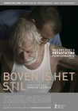 |
2823.
It's All So Quiet
Release Date:
January 9, 2015
Helmer, a single farmer in his fifties, lives with his aged, bedridden father in the Dutch countryside. His working days are marked by the visits of milk collector Johan, a man of his own age for whom Helmer holds a secret fascination. One day Helmer decides to renovate the house, buying himself a new double bed and moving his father upstairs. His life gains even more momentum when adolescent farmhand Henk comes to help him out. [Big World Pictures]
|

|
2824.
Grand Prix
Release Date:
December 21, 1966
American Grand Prix driver Pete Aron is fired by his Jordan-BRM racing team after a crash at Monaco that injures his British teammate, Scott Stoddard. While Stoddard struggles to recover, Aron begins to drive for the Japanese Yamura team, and becomes romantically involved with Stoddard's estranged wife.
|
2825.
The Woodsman
Release Date:
December 24, 2004
A harrowing and moving tale of one man's attempt to re-enter society after twelve years in prison. (Newmarket Films)
|
|
2826.
Summertime
Release Date:
July 22, 2016
In 1971 France, Delphine (Izïa Higelin), the daughter of farmers, moves to Paris to break free from her rural lifestyle and to gain financial independence. There, she meets Carole (Cécile De France), a Parisian actively involved in the stirrings of the feminist movement who also has a boyfriend. The two women engage in an affair that turns their lives upside down.
|
|
2827.
Shame
Release Date:
December 2, 2011

Brandon is a New Yorker who shuns intimacy with women but feeds his desires with a compulsive addiction to sex. When his wayward younger sister moves into his apartment stirring memories of their shared painful past, Brandon's insular life spirals out of control. (Fox Searchlight Pictures)
|
|

|
2828.
The Theory of Everything
Release Date:
November 7, 2014
Once a healthy, active young man, Stephen Hawking (Eddie Redmayne) received an earth-shattering diagnosis at 21 years of age. With his wife Jane (Felicity Jones) fighting tirelessly by his side, Stephen embarks on his most ambitious scientific work, studying the very thing he now has precious little of - time. Together, they defy impossible odds, breaking new ground in medicine and science, and achieving more than they could ever have dreamed.
|
2829.
Crazy Horse
Release Date:
January 18, 2012
Inside Paris’s Crazy Horse cabaret – the most famous nude dance show in the world. Acclaimed documentary filmmaker Frederick Wiseman explores one of the most mythic and colorful places dedicated to women, the Crazy Horse – a legendary Parisian cabaret club, founded in 1951 by Alain Bernardin. Over the years it has become the Parisian nightlife ‘must’ for visitors, ranking alongside the Eiffel Tower and the Louvre. Wiseman’s impeccable eye finds the Crazy Horse a uniquely French showcase, with an emphasis on elegance, perfectionism and a grueling schedule (2 shows a night and 3 on Saturdays, 7 days a week). The film shows us the rehearsals for and the unveiling of the brand new show – Désir – created by the renowned French choreographer Phillippe Decoufle. (Zipporah Films)
|
|
2830.
Plagues and Pleasures on the Salton Sea
Release Date:
April 20, 2007
Once known as the "California Riviera," the Salton Sea is now called one of America's worst ecological disasters. This documentary covers the historical, economic, political, and environmental issues that face the Sea, it more importantly offers up an offbeat portrait of the eccentric and individualistic people who populate its shores. Hair-raising and hilarious, part history lesson, part cautionary tale and part portrait of one of the strangest communities you've ever seen, this is the American Dream gone as stinky as a dead carp. (Tilapia Corp.)
|
|
2831.
Akeelah and the Bee
Release Date:
April 28, 2006

An inspirational drama, Akeelah and the Bee is the story of Akeelah Anderson (Palmer), a precocious eleven-year old girl from south Los Angeles with a gift for words. Despite the objections of her mother (Bassett), Akeelah enters various spelling contest, for which she is tutored by the forthright Dr. Larabee (Fishburne), her principal Mr. Welch (Armstrong) and the proud residents of her neighborhood. Akeelah's aptitude earns her an opportunity to compete for a spot in the Scripps National Spelling Bee and in turn united her neighborhood who witness the courage and inspiration of one amazing little girl. (Lionsgate)
|
|
| 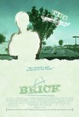 |
2832.
Brick
Release Date:
March 31, 2006
Brick, while taking its cues and its verbal style from the novels of Dashiell Hammett, also honors the rich cinematic tradition of the hard-boiled noir mystery, here wittily and bracingly immersed in fresh territory – a modern-day Southern California neighborhood and high school. (Focus Features)
|

|
2833.
Doctor Strange
Release Date:
November 4, 2016
After a tragic car accident, talented neurosurgeon Doctor Stephen Strange (Benedict Cumberbatch) must put ego aside and learn the secrets of a hidden world of mysticism and alternate dimensions. Based in New York City's Greenwich Village, Doctor Strange must act as an intermediary between the real world and what lies beyond, utilizing a vast array of metaphysical abilities and artifacts to protect the Marvel Cinematic Universe.
|
2834.
Possession
Release Date:
October 28, 1983
A woman (Isabelle Adjani) starts exhibiting increasingly disturbing behavior after asking her husband (Sam Neill) for a divorce. Suspicions of infidelity soon give way to something much more sinister.
|
|
2835.
Death and the Maiden
Release Date:
December 23, 1994
A chance encounter enables a woman to turn the tables on the sadistic doctor who tortured her 15 years earlier.
(New Line Cinema)
|
|
2836.
Men Go to Battle
Release Date:
July 8, 2016
Most Americans predict that the Civil War will end by Christmas, but Henry (Tim Morton) and Francis Mellon (David Maloney) couldn't care less. Bracing for another winter on their struggling farm in rural Kentucky, the brothers have become suffocatingly close. Francis' practical jokes become more and more aggressive until the night he accidentally injures Henry in a drunken fight. After humiliating himself in front of a daughter (Rachel Korine) of the town's preeminent family, Henry disappears in the night. Months later, Francis learns that Henry has joined the Union army, and the two are left to find out separately what the approaching war will bring. [Film Movement]
|
|
2837.
The Heart Machine
Release Date:
October 24, 2014
Cody (John Gallagher Jr.) and Virginia (Kate Lyn Sheil) fall in love while he’s in Brooklyn and she’s in Berlin. It’s a romance that could only happen online, and they’re happy together—except they’ve never really met. But Cody’s questions about Virginia’s life in Berlin become an obsession, leading him to doubt that she’s there at all. Combing NYC for clues about her whereabouts, an increasingly driven Cody begins overstepping boundaries of privacy in his desperate quest for answers.
|
|

|
2838.
The Lottery
Release Date:
June 11, 2010
In a country where 58% of African American 4th graders are functionally illiterate, The Lottery uncovers the failures of the traditional public school system and reveals that hundreds of thousands of parents attempt to flee the system every year. The Lottery follows four of these families from Harlem and the Bronx who have entered their children in a charter school lottery. Out of thousands of hopefuls, only a small minority will win the chance of a better future. (Variance Film)
|
| 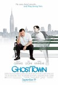 |
2839.
Ghost Town
Release Date:
September 19, 2008
Bertram Pincus is a man whose skills leave much to be desired. When Pincus dies unexpectedly, but miraculously revived after seven minutes, he wakes up to discover that he now has the annoying ability to see ghosts. Even worse, they all want something from him, particutarly Frank Herlihy who pesters him into breaking up the impending marriage of his widow Gwen. That puts Pincus squarely in the middle of a triangle with spirited results. (Paramount Pictures/Dreamworks Pictures)
|

|
2840.
Pressure Cooker
Release Date:
May 27, 2009
Three seniors at Philadelphia's Frankford High School find an unlikely champion in the kitchen of Wilma Stephenson. A legend in the school system, Mrs. Stephenson's hilariously blunt boot-camp method of teaching Culinary Arts is validated by years of scholarship success. (Non Sequitur Productions)
|

|
2841.
The Day After
Release Date:
May 11, 2018
Book publisher Bongwan’s (Kwon Haehyo) marriage is on the rocks after his wife (Cho Yunhee) discovers the affair he’s been having with his assistant (Kim Saebyuk). Now that relationship is ending too and Bongwan’s new assistant, the sharp and sensitive Areum (Kim Minhee), on her first day in the office, is left to navigate the fallout of all the turnover in Bongwan’s life.
|

|
2842.
Escapes
Release Date:
July 26, 2017
Escapes blazes a wild path through mid-20th-century Hollywood via the experiences of Hampton Fancher – flamenco dancer, actor, and the unlikely producer and screenwriter of the landmark sci-fi classic Blade Runner. A consummate raconteur, Fancher recounts episodes from his remarkable life — romantic misadventures with silver-screen stars, wayward acts of chivalry, jealousy, and friendship — matched with a parallel world of film and TV footage wherein Fancher plays cowboys, killers, fops, cads, and the occasional hero. Equal parts dense and fleet, Escapes shows how one man’s personal journey can unexpectedly shape a medium’s future.
|

|
2843.
Tiny Furniture
Release Date:
November 12, 2010
Twenty-year-old Aura returns home to her artist mother’s TriBeCa loft with the following: a useless film theory degree, 357 hits on her Youtube page, a boyfriend who’s left her to find himself at Burning Man, a dying hamster, and her tail between her legs. Luckily, her trainwreck childhood best friend never left home, the restaurant down the block is hiring, and ill-advised romantic possibilities lurk around every corner. Surrounded on all sides by what she could become, Aura just wants someone to tell her who she is. (IFC Films)
|

|
2844.
In Search of Greatness
Release Date:
November 2, 2018
Through the eyes of the greatest athletes of all time, IN SEARCH OF GREATNESS is a cinematic journey into the secrets of genius.
|
2845.
Air Guitar Nation
Release Date:
March 23, 2007
A battle of naked ambition played out on the national and, ultimately, world stage, Air Guitar Nation chronicles the birth of the U.S. Air Guitar Championships as legions of aspiring rock stars live out their dreams on a quest to become the world champion in a strange world where musical ability plays second fiddle to virtual virtuosity. (Docurama Films)
|
|
| 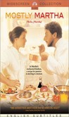 |
2846.
Mostly Martha
Release Date:
August 16, 2002
Martha (Gedeck) is a head chef for an upscale restaurant who relies on her culinary skill as her primary means of communication. When her sister dies in a car accident, her orderly world falls apart as she has to care for her eight-year-old niece, a girl who proves as resolute and single-minded as her aunt. (Paramount Classics)
|
2847.
The Closet
Release Date:
June 29, 2001
A hilarious story of how one little rumor not only brightens a simple man's life, but also triggers an awakening of everyone around him. (Miramax Films)
|
|
| 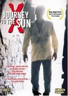 |
2848.
Journey to the Sun
Release Date:
February 9, 2001
The story of two men who form an unlikely friendship while making the transition to city life in Istanbul.
|
2849.
The Thomas Crown Affair
Release Date:
August 6, 1999
Based on the 1968 film of the same name, this sophisticated thriller combines the action of an art heist and an intense love story. (MGM)
|
|
2850.
Walk the Line
Release Date:
November 18, 2005
The story of the young Johnny Cash and his incendiary love affair with June Carter Cash come to life in Walk the Line. (20th Century Fox)
|
|

|
2851.
Six Degrees of Separation
Release Date:
December 8, 1993
An affluent New York couple finds their lives touched, intruded upon, and compelled by a mysterious young black man who is never quite who he says he is.
|

|
2852.
When Marnie Was There
Release Date:
May 22, 2015
Sent from her foster home in the city one summer to a sleepy town by the sea in Hokkaido, Anna dreams her days away among the marshes. She believes she’s outside the invisible magic circle to which most people belong – and shuts herself off from everyone around her, wearing her “ordinary face”. Anna never expected to meet a friend like Marnie, who does not judge Anna for being just what she is. But no sooner has Anna learned the loveliness of friendship than she begins to wonder about her newfound friend. [GKIDS]
|
2853.
Pusher III: I'm the Angel of Death
Release Date:
August 18, 2006
PUSHER III takes place over the course of a single day, with the now middle-aged Milo struggling to prepare his daughter’s 25th birthday party. As Milo fights his own personal demons in the form a smack addiction he’s trying to kick, his business day proves equally challenging once a shipment of ecstasy arrives in place of the heroin he was expecting. Milo is forced to contend with a new order of young hoods in order to move this designer drug he knows little about. Now feeling the squeeze he himself had put on so many before him, Milo must find a way to maintain his place of dominance atop the Copenhagen underworld. To do so he will have to survive one of the most harrowing episodes of his long, illustrious career. [Magnolia Pictures]
|
|

|
2854.
Control
Release Date:
April 1, 2005
The massive labyrinthine netherworld that is the Budapest subway system, provides the stunning setting for Kontroll, a high-style, high-speed romantic thriller in which the lives of assorted outcasts, lovers and dreamers intersect and collide. (ThinkFilm)
|

|
2855.
Terri
Release Date:
July 1, 2011
Having been abandoned by his parents to an ailing uncle, Terri, is mercilessly teased by his peers and garners even more unwanted attention from school authorities by coming to school still wearing pajamas – when he decides to show up at all. Resigned to his outsider status, Terri is surprised when his tough-talking vice principal, Mr. Fitzgerald, takes an interest in him. Although his efforts are sometimes clumsy and occasionally dubiously professional, he genuinely wants to help him through this tough time. Under Fitzgerald's tutelage, Terri befriends a pair of fellow misfits, Chad, an edgy loner whose rebellion masks his own insecurities, and Heather, a sexually precocious girl whose beauty proves to be a trap of its own. The three teenagers, so different on the surface, but all outcasts in the unforgiving high school hierarchy, find an unexpected, imperfect bond that reflects the tenuousness, poignance and pathos of the adolescent experience. [ATO Pictures]
|
2856.
Dormant Beauty
Release Date:
June 6, 2014
Several intertwined stories questioning the meaning of life converge during the last six days in the life of Eluana Englaro, a young woman who spent 17 years in a vegetative state.
|
|

|
2857.
Obit
Release Date:
April 26, 2017
It's a shame no one wants to talk to them at parties, because obituary writers are a surprisingly funny bunch. Ten hours before newspapers hit neighborhood doorsteps—and these days, ten minutes before news hits the web—an obit writer is racing against deadline to sum up a long and newsworthy life in under 1000 words. The details of these lives are then deposited into the cultural memory amid the daily beat of war, politics, and football scores. Obit. is the first documentary to explore the world of these writers and their subjects, focusing on the legendary team at The New York Times, who approach their daily work with journalistic rigor and narrative flair. Going beyond the byline and into the minds of those chronicling life after death on the freshly inked front lines of history, the film invites some of the most essential questions we ask ourselves about life, memory, and the inevitable passage of time. What do we choose to remember? What never dies? [Kino Lorber]
|
2858.
Maquia: When the Promised Flower Blooms
Release Date:
July 20, 2018
The people of Iorph live far away from the lands of men, weaving the happenings of each day into a fabric called Hibiol. They live for centuries while maintaining their youthful appearance. Maquia, an orphaned Iorph girl, lives her life in an oasis surrounded by friends, yet somehow feels “alone”. But the tranquil lives of the Iorph are shattered in an instant when the Mezarte army invades their territory on a dragon fleet, seeking the blood that grants the Iorph long life. Maquia manages to escape, but loses her friends and her home in the chaos. She then encounters an orphaned baby who is “alone”. Maquia raises this boy "Ariel", with the help of some new friends. But as the era changes, the bond between Maquia and Ariel changes too, amidst a backdrop of racial tensions between the Iorph and the Mezarte. This is a story of irreplaceable time, woven by two lonely people who can only find solace in each other. [Eleven Arts]
|
|
| 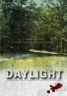 |
2859.
Daylight
Release Date:
July 15, 2011
A harrowing psychological thriller from a widely acclaimed filmmaker, Daylight pits a couple lost in America against a conniving gang of kidnappers, in David Barker's rigorous and personal re-imagining of the genre film. (Cinema Purgatorio)
|

|
2860.
Amer
Release Date:
October 29, 2010
Ana is confronted to Body and Desire at three key moments of her life. Her carnal search sways between reality and colored fantasies becoming more and more oppressive. A black laced hand prevents her from screaming. The wind lifts her dress and caresses her thighs. A razor blade brushes her skin, where will this chaotic and carnivorous journey leave her? (Olive Films)
|

|
2861.
Nas: Time Is Illmatic
Release Date:
October 1, 2014
Twenty years after the release of Nas's groundbreaking debut album Illmatic, Nas: Time is Illmatic takes us into the heart of his creative process. Returning to his childhood home in Queensbridge, Nas shares stories of his upbringing, his influences, and the obstacles he faced before his major label signing at age 19. [Tribeca Film]
|
2862.
Match Point
Release Date:
December 28, 2005
Match Point is a drama about ambition and obsession, the seduction of wealth, and the often discordant relationship between love and sexual passion. Perhaps most importantly, however, the story reveals the huge part luck plays in the events of our lives, refuting the comforting misconception that more of life is under our control than really is. (Dream Works Pictures)
|
|

|
2863.
They Shoot Horses, Don't They?
Release Date:
December 10, 1969
The lives of a disparate group of contestants intertwine in an inhumanely grueling dance marathon.
|

|
2864.
Still Alice
Release Date:
December 5, 2014
Alice Howland (Julianne Moore), a successful Columbia University linguistics professor happily married with three grown children, struggles to maintain her mind after being diagnosed with early onset Alzheimer’s.
|
2865.
Joan Didion: The Center Will Not Hold
Release Date:
October 27, 2017
Across more than 50 years of essays, novels, screenplays, and criticism, Joan Didion has been our premier chronicler of the ebb and flow of America’s cultural and political tides with observations on her personal – and our own – upheavals, downturns, life changes, and states of mind. In the intimate, extraordinary documentary Joan Didion: The Center Will Not Hold, actor and director Griffin Dunne unearths a treasure trove of archival footage and talks at length to his “Aunt Joan” about the eras she covered and the eventful life she’s lived, including partying with Janis Joplin in a house full of L.A. rockers; hanging in a recording studio with Jim Morrison; and cooking dinner for one of Charles Manson’s women for a magazine story. Didion guides us through the sleek literati scene of New York in the 1950s and early ’60s, when she wrote for Vogue; her return to her home state of California for two turbulent decades; the writing of her seminal books, including Slouching Towards Bethlehem, Play It as It Lays, A Book of Common Prayer, and The White Album; her film scripts, including The Panic in Needle Park; her view of 1980s and ’90s political personalities; and the meeting of minds that was her long marriage to writer John Gregory Dunne. She reflects on writing about her reckoning with grief after Dunne’s death, in The Year of Magical Thinking (winner of the National Book Award for Nonfiction), and the death of their daughter Quintana Roo, in Blue Nights. With commentary from friends and collaborators including Vanessa Redgrave, Harrison Ford, Anna Wintour, David Hare, Calvin Trillin, Hilton Als, and Susanna Moore, the most crucial voice belongs to Didion, one of the most influential American writers alive today. [Netflix]
|
|

|
2866.
A Space Program
Release Date:
March 18, 2016
In A Space Program, internationally acclaimed artist Tom Sachs takes us on an intricately handmade journey to the red planet, providing audiences with an intimate, first person look into his studio and methods. The film is both a piece of art in its own right and a recording of Sachs’ historic piece, Space Program 2.0: MARS, which opened at New York’s Park Avenue Armory in 2012. For Space Program 2.0: MARS, Sachs and his team built an entire space program from scratch. They were guided by the philosophy of bricolage: creating and constructing from available yet limited resources. They ultimately sent two female astronauts to Mars in search of the answer to humankind’s ultimate question... are we alone? [Zeitgeist Films]
|

|
2867.
Sound of Noise
Release Date:
March 9, 2012
Police officer Amadeus Warnebring was born into a musical family with a long history of famous musicians. Ironically, he hates music. His life is thrown into chaos when a band of crazy musicians decides to perform a musical apocalypse using the city as their orchestra... Reluctantly, Warnebring embarks on his first musical investigation...(Magnolia Pictures)
|
2868.
Ethel & Ernest
Release Date:
December 15, 2017
Based on the award-winning book by acclaimed British author and illustrator Raymond Briggs, this hand-drawn, animated film tells the true story of Raymond’s own parents – Ethel and Ernest - two ordinary Londoners living through a period of extraordinary events and immense social change.
|
|

|
2869.
Siddharth
Release Date:
June 27, 2014
After sending away his 12 year-old son Siddharth for work, Mahendra (a chain-wallah who fixes broken zippers on the streets) is relieved – his financial burdens will be alleviated. But when Siddharth fails to return home, Mahendra learns he may have been taken by child-traffickers. With little resources and no connections, he travels across India in pursuit, with the hope that whatever force arbitrarily took his child away will return him unharmed. [Zeitgeist Films]
|
2870.
Truly Madly Deeply
Release Date:
May 24, 1991
Unable to get over the death of her musician lover, a young women gets the shock of her life when he turns up in her apartment—seemingly alive—and helps her back to the world of the living. [MGM]
|
|
| 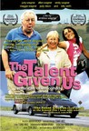 |
2871.
The Talent Given Us
Release Date:
June 17, 2005
A road movie about a family that is forced to come together, for better or worse. (Daddy W Productions)
|
2872.
Manifesto
Release Date:
May 10, 2017
From acclaimed visual artist Julian Rosefeldt, Manifesto features Cate Blanchett in 13 distinct, must-see vignettes that incorporate timeless manifestos from 20th century art movements. From anchorwoman to homeless man, from Pop Art to Dogma 95, a chameleonic Blanchett gives a tour-de-force performance as she transforms herself like never before. Rosefeldt weaves together history’s most impassioned artistic statements in this stunning and contemporary call to action. [FilmRise]
|
|

|
2873.
My Entire High School Sinking Into the Sea
Release Date:
April 14, 2017
Dash (Jason Schwartzman) and his best friend Assaf (Reggie Watts) are preparing for another year at Tides High School muckraking on behalf of their widely-distributed but little-read school newspaper, edited by their friend Verti (Maya Rudolph). But just when a blossoming relationship between Assaf and Verti threatens to destroy the boys’ friendship, Dash learns of the administration’s cover-up that puts all the students in danger. As disaster erupts and the friends race to escape through the roof of the school, they are joined by a popular know-it- all (Lena Dunham) and a lunch lady (Susan Sarandon) who is much more than meets the eye. [Gkids]
|

|
2874.
Strictly Ballroom
Release Date:
February 12, 1993
Strictly Ballroom is the magical story of a championship ballroom dancer who's breaking all the rules, and his ugly duckling dancing partner. (BV Entertainment)
|
| 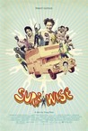 |
2875.
Surfwise
Release Date:
May 9, 2008
Like many American outsider adventurers, Dorian "Doc" Paskowitz set out to realize a utopian dream. Abandoning a successful medical practice, he sought self-fulfillment by taking up the nomadic life of a surfer. But unlike other American searchers like Thoreau or Kerouac, Paskowitz took his wife and nine children along for the ride, all 11 of them living in a 24-foot camper. Together, they lived a life that would be unfathomable to most, but enviable to anyone who ever relinquished their dreams to a straight job. The Paskowitz Family proved that, though America may be running out of frontiers, it hasn't run out of frontiersman. (Magnolia Pictures)
|
2876.
In the Intense Now
Release Date:
January 31, 2018
Made following the discovery of amateur footage shot in China in 1966 during the first and most radical stage of the Cultural Revolution, In the Intense Now speaks to the fleeting nature of moments of great intensity. Scenes of China are set alongside archival images of the events of 1968 in France, Czechoslovakia, and, to a lesser extent, Brazil. In keeping with the tradition of the film-essay, they serve to investigate how the people who took part in those events continued onward after passions had cooled. The footage, all of it archival, not only reveals the state of mind of those filmed—joy, enchantment, fear, disappointment, dismay—but also sheds light on the relationship between a document and its political context. What can one say of Paris, Prague, Rio de Janeiro, or Beijing by looking at the images of the period? Why did each of these cities produce a specific sort of record? [Icarus FIlms]
|
|

|
2877.
The Incredible Jessica James
Release Date:
July 28, 2017
Jessica James (Jessica Williams), an aspiring playwright in New York City, is trying hard to get over a recent breakup with her boyfriend. She sees light at the end of the tunnel when she meets Boone (Chris O’Dowd), who's also recovering from a recent break-up. Together, they figure out a way to make it through the tough times, while also realizing they like each other—a lot. [Sundance]
|
2878.
Donald Cried
Release Date:
March 3, 2017
Peter Latang (Jesse Wakeman) left working class Warwick, Rhode Island to reinvent himself as a slick, Wall Street mover and shaker. Fifteen years later, when he's forced to return home to bury his Grandmother he loses his wallet on the trip. Stranded, the only person he can think of to help him out is his next door neighbor and former childhood friend Donald Treebeck (Kris Avedisian). Donald hasn't changed a bit, and what starts as a simple favor turns into a long van ride into their past.
|
|

|
2879.
The Silence
Release Date:
March 8, 2013
13-year-old Sinikka is missing. Her bicycle is found in the exact place where a girl was killed 23 years ago. Recently widowed detective David and his colleague Janna struggle to solve the mystery of these parallel crimes with the help of Krischan, the retired investigator of the unresolved case. [Music Box Films]
|
| 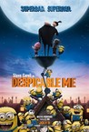 |
2880.
Despicable Me
Release Date:
July 9, 2010
Gru delights in all things wicked. Armed with his arsenal of shrink rays, freeze rays, and battle-ready vehicles for land and air, he vanquishes all who stand in his way. Until the day he encounters the immense will of three little orphaned girls who look at him and see something that no one else has ever seen: a potential Dad. The world's greatest villain has just met his greatest challenge: three little girls named Margo, Edith and Agnes. (Universal Pictures)
|

|
2881.
Jack Smith and the Destruction of Atlantis
Release Date:
April 11, 2007
Jack Smith has been simultaneously hailed as the godfather of performance art, the William Blake of film, and a photographer who has "influenced three decades of artists." While largely unknown in mainstream circles today, Jack Smith was central to a period when American culture finally began to question itself. (Tongue Press)
|
| 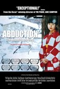 |
2882.
Abduction: The Megumi Yokota Story
Release Date:
January 12, 2007
Japan, 1977. A dark, lonely road leads to the windswept shores. This is the remarkable story of a 13-year-old Japanese girl abducted on her way home from school by North Korean spies. For 20 years, her parents had no idea what had happened to her or if she was even alive. Then, one day the whole world learned the shocking truth. (Safari Media)
|
|
|
2883.
Isn't This a Time! A Tribute Concert for Harold Leventhal
Release Date:
December 9, 2005
The documentary features a 2003 Carnegie Hall concert featuring many of folk music's leading lights, in honor an unsung American hero: music impresario Harold Leventhal. (Seventh Art Releasing)
|
| 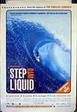 |
2884.
Step Into Liquid
Release Date:
August 8, 2003
This documentary examines today's global surf culture.
|
| 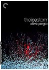 |
2885.
The Ice Storm
Release Date:
September 26, 1997
It's November 1973 in New Canaan, Connecticut. Watergate has caught up with Richard Nixon. The Beatles are recording solo albums. Wife-swapping has come to the suburbs. And, the Hood family is skidding out of control. (Fox Searchlight)
|
| 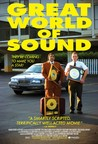 |
2886.
Great World of Sound
Release Date:
September 14, 2007
Martin responds to an ad in the paper for a company called Great World of Sound that's setting up shop in a generic office park. After his interview, he's invited to attend a Saturday seminar, explaining what the job entails. There he meets larger-than-life Clarence, and the two hit it off right away. At the seminar, an articulate but somewhat slimy man named Shank explains that the seminar participants have been selected out of a field of 80 applicants to be A&R executives for GWS, seeking out new, untapped musical talent. GWS will put out a record for these artists--all it asks for is a financial commitment from them upfront to show that they're serious, in addition to allaying the costs of studio recording time and marketing. After all, GWS is an independent record company working on a budget. Shank and his cohort go on to talk about how much money the producers stand to make. Then, as if to prove it, Shank dials into his bank account to let the room hear his $13,000-plus balance. Martin is suspicious, but Clarence believes that this is a whole new way of looking at the world, and if they sign someone that hits it big, they'll hit it big with them. Martin, who likes the idea of helping new artists, agrees to sign on with GWS. Clarence and Martin soon prove to be among the best of the GWS crew. But as the veneer falls away from GWS, Clarence and Martin have no choice but to reconcile the excitement and escape that their new jobs have provided them with reality. Have they become scam artists? Or are they victims of the scam themselves? (Magnolia Pictures)
|
2887.
The Kill Team
Release Date:
July 25, 2014
The Kill Team looks at the devastating moral tensions that tear at soldiers’ psyches through the lens of one highly personal and emotional story. Private Adam Winfield was a 21-year-old soldier in Afghanistan when he attempted with the help of his father to alert the military to heinous war crimes his platoon was committing. But Winfield’s pleas went unheeded. Left on his own and with threats to his life, Private Winfield was himself drawn into the moral abyss, forced to make a split-second decision that would change his life forever.
|
|
2888.
Sweet Virginia
Release Date:
November 17, 2017
In the wake of a triple murder that leaves the residents of a remote Alaskan outpost on edge, tightly wound drifter Elwood (Christopher Abbott) checks into a motel run by Sam (Jon Bernthal), a former rodeo champion whose imposing physical presence conceals a troubled soul. Bound together by their outsider status, the two men strike up an uneasy friendship—a dangerous association that will set off a new wave of violence and unleash Sam’s darkest demons. [IFC Films]
|
|
| 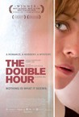 |
2889.
The Double Hour
Release Date:
April 15, 2011
Guido, a former cop, is a luckless veteran of the speed-dating scene in Turin. But, much to his surprise, he meets Slovenian immigrant Sonia, a chambermaid at a high-end hotel. The two hit it off, and a passionate romance develops. After they leave the city for a romantic getaway in the country, things suddenly take a dark turn. As Sonia's murky past resurfaces, her reality starts to crumble. Everything in her life begins to change—questions arise and answers only arrive through a continuous twist and turn of events keeping viewers on edge until the film's final moments. (Samuel Goldwyn Films)
|

|
2890.
12
Release Date:
March 4, 2009
A loose remake of “12 Angry Men”, 12 is set in contemporary Moscow where 12 very different men must unanimously decide the fate of a young Chechen accused of murdering his step-father, a Russian army officer. Consigned to a makeshift jury room in a school gymnasium, one by one each man takes center stage to confront, connect, and confess while the accused awaits a verdict and revisits his heartbreaking journey through war in flashbacks. (Sony Picture Classics)
|
2891.
The Falling
Release Date:
August 7, 2015
At the centre of the epidemic are intense and clever Lydia Lamont (Maisie Williams) and admired and rebellious Abbie Mortimer (Florence Pugh), both 16 years old. They carve their initials into a majestic English oak tree by a magical pond and vow never to lose touch. But Lydia already feels that Abbie is drifting away from her and soon her fears are confirmed. Struggling to find solace within the volatile, strange atmosphere of the school and her troubled home-life, Lydia feels driven to discover what is really behind everything that seems wrong. As the fainting escalates Lydia confronts the authority figures around her: her self-absorbed mother, Eileen (Maxine Peake), the unbending and indomitable deputy head Miss Mantel (Greta Scacchi), and the enigmatic and powerful headmistress Miss Alvaro (Monica Dolan). Eventually Lydia’s actions force old secrets to rise to the surface and she finds herself faced with a truth that she never expected. [BBC Films]
|
|

|
2892.
Real Genius
Release Date:
August 7, 1985
Lazlo Olliefeld in steam tunnels. No purchase necessary, enter as often as you want. Teen geniuses deal with their abilities while developing a high-powered laser for a university project. When their professor intends to make unsavory use of their creation, they get even more creative.
|
| 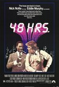 |
2893.
48 Hrs.
Release Date:
December 8, 1982
Detective Jack Cates (Nolte) takes convict Reggie Hammond (Murphy) out of jail for forty-eight hours to solve a case.
|
2894.
Stolen Seas
Release Date:
January 18, 2013
Utilizing exclusive interviews and access to real pirates, hostages, ship-owners, pirate negotiators and experts on piracy and international policy, Stolen Seas explores the Somali pirate phenomenon - how it came to be and why it will continue.
|
|
2895.
Undefeated
Release Date:
February 10, 2012
A perennial whipping boy, in recent decades Manassas had gone so far as to sell their home games to the highest bidder, but that all changed in the spring of 2004 when Bill Courtney, a former high school football coach turned lumber salesman, volunteered to lend a hand. When he arrived, the team consisted of 17 players, some timeworn equipment and a patch of grass masquerading as a practice field. Focusing more on winning young men than football games, the football program nevertheless began resurrecting itself and, in 2009, features the most talented team Manassas has ever fielded; a team that seems poised to end the playoff jinx that has plagued the school since time immemorial. (The Weinstein Company)
|
|
2896.
Tuya's Marriage
Release Date:
April 4, 2008
Set in the remote inner Mongolian grassland, Tuya's Marriage is the moving tale of Tuya (Nan Yu,) the iron-willed wife of Bater, a herdsman who has been paralyzed. Tuya takes up the sole responsibility to make a living for her family, but her hard labor endangers her health. Faced with a harsh reality, the couple decides to divorce so that Tuya can seek a better life. Imposing her own conditions--her new husband will have to take care of Bater, their children, and their herding land--the strong-minded, stubborn, but gentle Tuya embarks on an arduous and at times unintentionally comic search for a new husband in this Mongolian design for living. She meets suitors who are rich but disingenuous or likable but shy, and keeps her family together against insurmountable odds. Wrenching and beautiful, Tuya's Marriage is the indelible portrait of a strong woman determined to save her family, herself, and their ancient way of life. (Music Box Films)
|
|

|
2897.
Sylvio
Release Date:
October 13, 2017
It's the story of a small town gorilla, Sylvio, who is stuck in his job at a debt collection agency. Deep down he just wants to express himself with his hand puppet, Herbert Herpels, and his puppet show that highlights the quiet moments of life. He accidentally joins a local TV program and a series of on-air mishaps threaten to shatter his identity, sending him on a journey of self-discovery. [Factory 25]
|

|
2898.
Fed Up
Release Date:
May 9, 2014
Far more of us get sick from what we eat than anyone has ever realized. This potent exposé uncovers the food industry’s dirty secrets. This exploration reveals how, in the wake of media attention, public fascination with appearance and government policies pushing for change, generations of Americans will live shorter lives. [RADiUS-TWC]
|

|
2899.
Harry Potter and the Order of the Phoenix
Release Date:
July 11, 2007
In Harry Potter and the Order of the Phoenix, Harry returns for his fifth year of study at Hogwarts only to discover that much of the wizarding community has been led to believe that the story of the teenager's recent encounter with the evil Lord Voldemort is a lie, putting Harry's integrity in question. Worse, the Minister for Magic, Cornelius Fudge, has appointed a new Defense Against the Dark Arts teacher, the duplicitous Professor Dolores Umbridge. But Umbridge's "Ministry-approved" course of defensive magic leaves the young wizards woefully unprepared to defend themselves against the Dark forces threatening them, so at the prompting of his friends Hermione and Ron, Harry is convinced to take matters into his own hands. Meeting secretly with a small group of students who name themselves "Dumbledore's Army", Harry teaches them how to defend themselves against the Dark Arts, preparing the courageous young wizards for the extraordinary battle that lies ahead. (Warner Bros. Pictures)
|

|
2900.
Smashed
Release Date:
October 12, 2012
A married couple whose bond is built on a mutual love of alcohol gets their relationship put to the test when the wife decides to get sober. [Sony Pictures Classics]
|